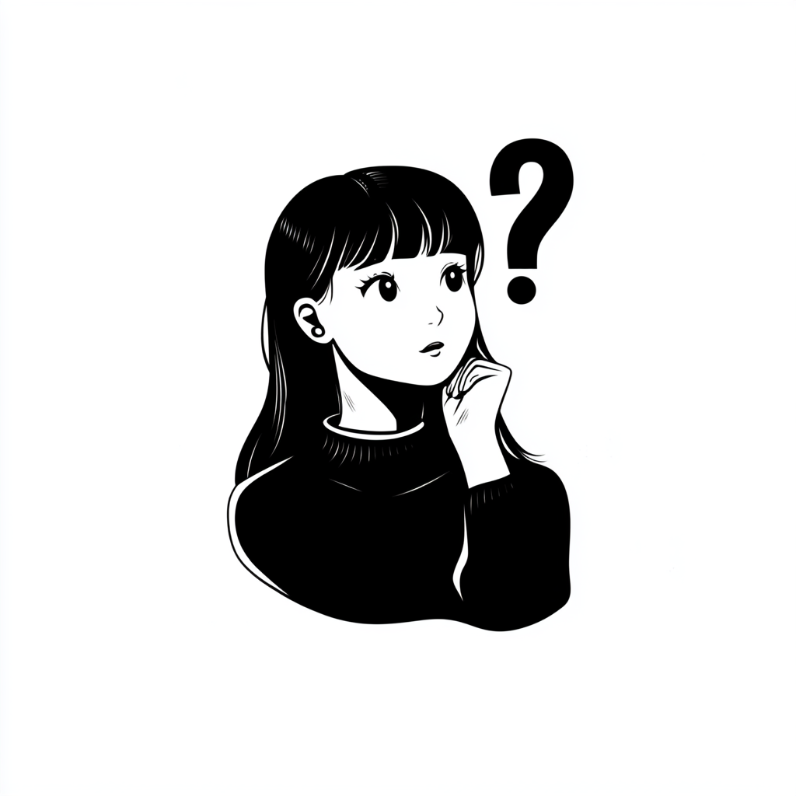
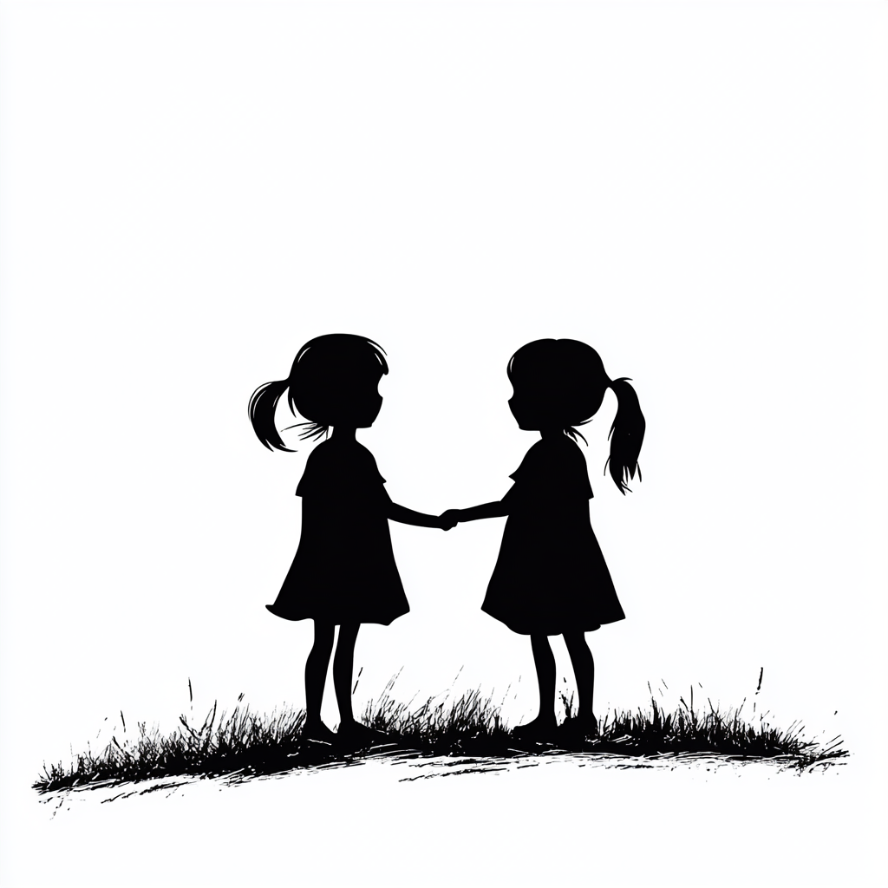

Mika sighed as she looked at her phone, filled with messages from her friends urging her to come to the party. "Next time," she whispered to herself, putting the phone on silent. She spent the evening reviewing formulas and solving problems. It wasnt glamorous, but when the test came, Mika felt confident.
A week later, the teacher handed back the graded tests.
Mika, excellent work, he said, smiling. Can you stay after class? Id like to discuss something with you
After class, Mika nervously approached her teacher
"I’ve noticed your dedication," he began. "It’s rare to see a student prioritize their goals the way you have.
I wanted to let you know about a special program for high-achieving students
It’s a university prep track with a scholarship opportunity. I think you’d be a great candidate
It’s competitive, but I think you have what it takes.What do you think?
Mika thought for a moment before replying, "I’d love to apply for the program. Thank you for believing in me."
The teacher handed her the application forms, and Mika felt a rush of excitement. She knew this was a big opportunity and decided to give it her all.
Mika smiled and said, "I’d like that too."
